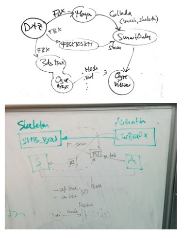
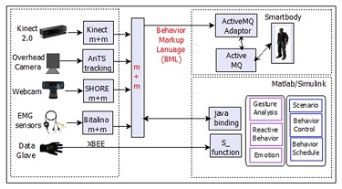

For a virtual character to come across as responsive and emotive in real-time, it must appear to first sense the user’s movements, facial expression, hand gestures, and even intent (via say in a rock-paper-scissors game), and then process those sensory signals. To do this I designed, implemented, and tested several sophisticated real-time bio, gesture, and movement sensors in the system. A data glove sensor is used to capture the user’s hand gestures.
The system supports the capture, recognition, control of movement data. Thus, through sessions of expert interview and focus groups, we explored how to design an infrastructure for all the components of the system to works to gether.
The final design included a functional and modular structure which connects many applications such as animation system, and sensors. The moduler structure let other designers easily add new sesnors and animation frameworks.
Next, is the video of functional setup with all the sensors such as Kinect and webcam working in real-time and in parallel.
A Microsoft Kinect 3D camera was used to locate the user’s head to guide the virtual character’s gazes. In addition, the character adjusts his personal space with the user as she gets too close.
Various sensors, such as a Kinect 3D camera and overhead cameras were used to send streams of input such as users’ coordination in the space, users’ heights or environmental information such as noise and light. The character reacts dynamically and in real-time to these inputs. The SHORE application developed by Fraunhofer research center, was used to receive the input stream from a webcam and forward information such as emotional expression of the user’s facial expressions (and age, sex) to RealAct. The electromyography (EMG) sensor was used to measure activity of the facial muscles to detect the user’s smile in real-time.